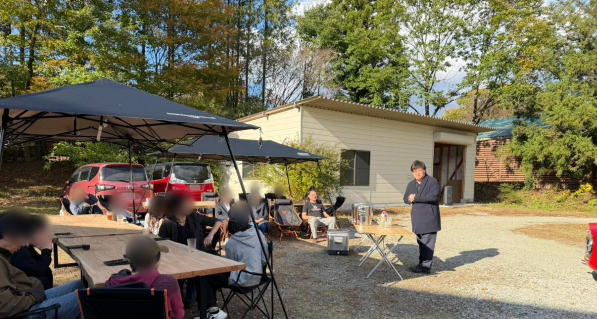

NEWS ・ EVENT REPORT
Thank you
10月31日（土）、那須の「車好きのためのカフェ」で、AIKOUCAR のプレオープンイベントを開催しました。
紅葉の始まった那須に、自慢の愛車とともにお越しいただき、ありがとうございました。初めて顔を合わせた方同士が、車の話から自然に打ち解けていく。私たちがつくりたかった「クルマで、人と人をつなぐ」場面を、たくさん見ることができた一日でした。
AIKOUCAR 運営一同
Cars
黄色、青、白、黒。それぞれのオーナーのこだわりが詰まった一台が、カフェの前に並びました。車の前では、あちこちで会話が生まれていました。
Talk
午後は、テントの下でコミュニティの考え方とこれからの計画をお話ししました。
最後まで耳を傾けてくださったみなさん、ありがとうございました。

Movie
会場に並んだ車を、ぐるりと撮影しました。秋の光の中で、ボディの色がよく映えていました。
このプレオープンでいただいた声は、グランドオープンと次のイベントづくりに活かします。
Next
プレオープンに来られなかった方も、ぜひ次の機会にお会いしましょう。
※ 写真・動画は、運営メンバー以外の方のお顔と、車のナンバーをぼかして掲載しています。掲載について気になる点があれば、LINEグループからお知らせください。